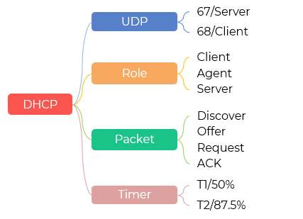
服务器运行在 67 号端口
客户运行在 68 号端口
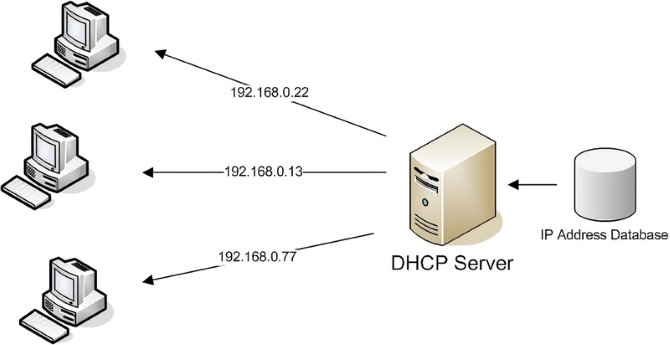
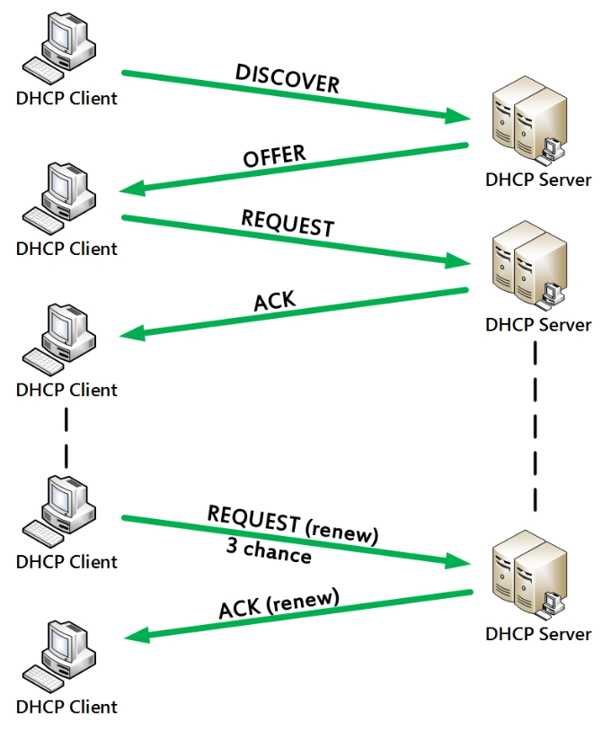
受限广播地址 Limited Broadcast Address
路由器绝不会转发以 255.255.255.255 为目的地址的数据包
子网广播地址可以被路由器转发，但是通常被禁止
在千兆局域网中，Windows/Linux 主机通常 300~800ms 内完成 DHCP
用户开机后，系统初始化、加载驱动、启动服务等过程本身就需要几秒到十几秒
DHCP 的几百毫秒几乎不可感知
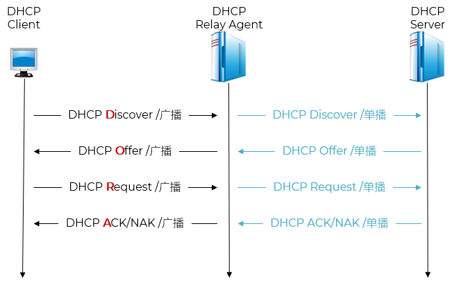
拒绝分配
释放地址
请求其它资源
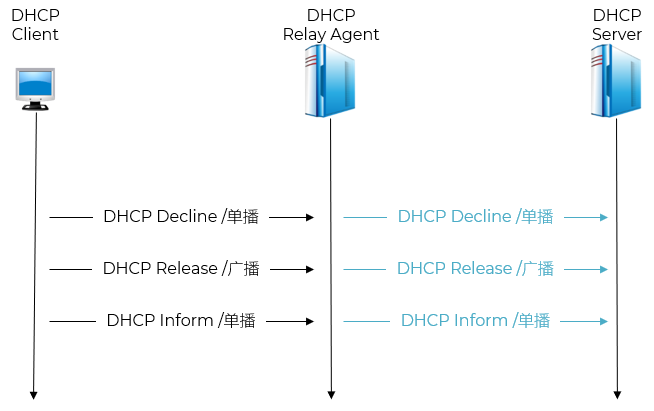
防止 Ip 地址长期闲置
支持网络中设备动态加入/离开
实现地址池的自动回收与再分配
租期为 8 小时（28800 秒），则 T1 = 4 小时（14400 秒）
租期为 8 小时，则 T2 ≈ 7 小时（25200 秒）
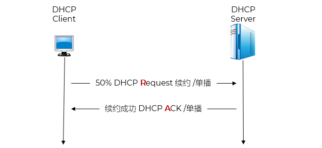
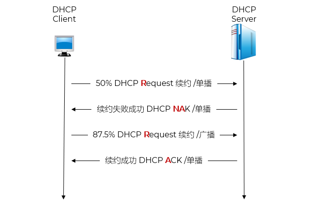
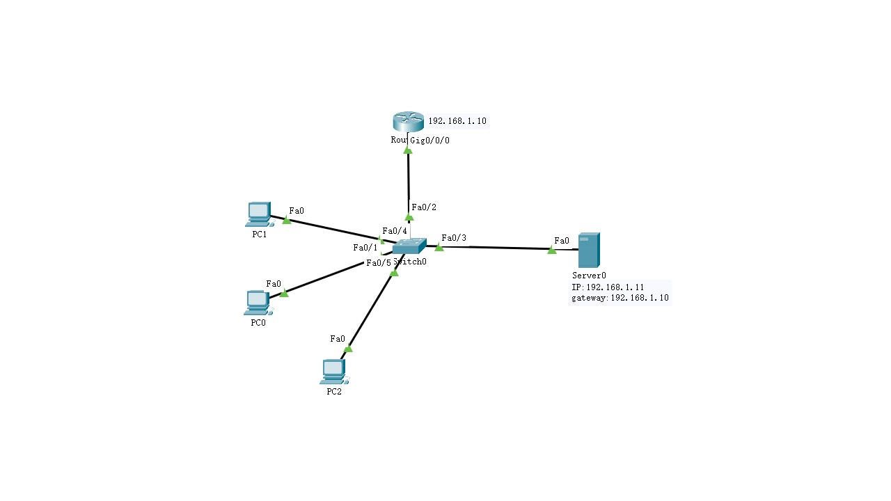
Router(config)#interface GigabitEthernet0/0/0 Router(config-if)#ip address 192.168.1.10 255.255.255.0 Router(config-if)#no shutdown
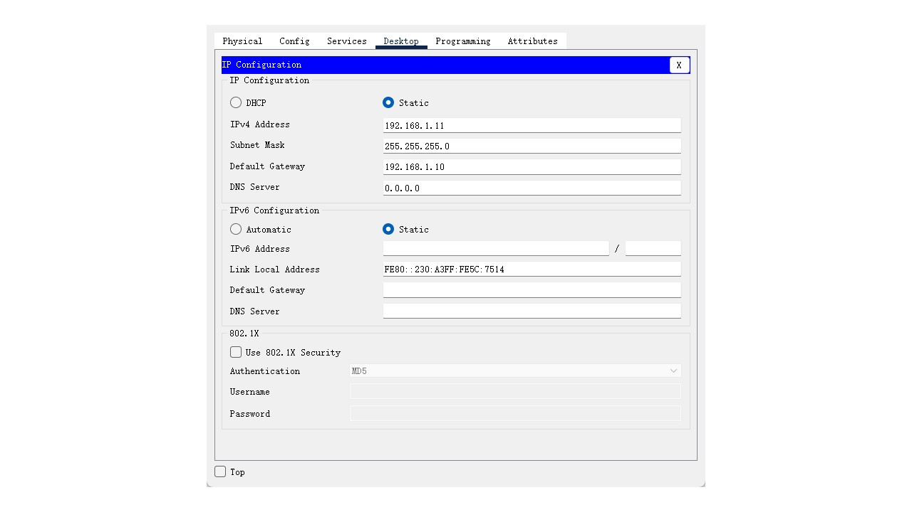
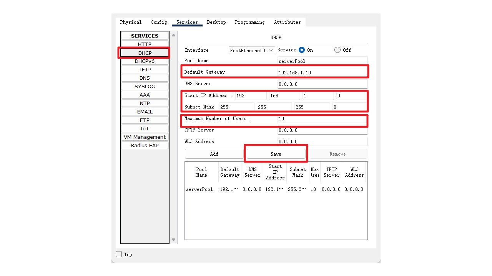
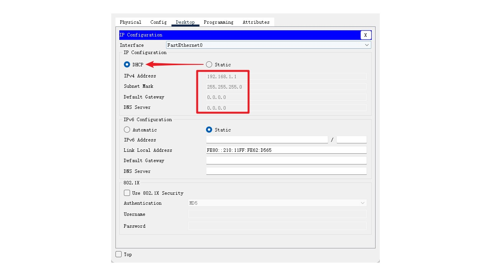
Discover
Offer
Request
ACK
T1
T2
DHCPDISCOVER – The client broadcast a DHCPDISCOVER packet in order to locate a DHCP server in the network, in some cases that the DHCP server isn’t in the same subnet of the client, you’ll need to configure in your network devices (usually routers) a DHCP Relay Agent, in order to transfer the DHCPDISCOVER packet to the DHCP server.
DHCPOFFER – The DHCP server broadcast a DHCPOFFER packet to the client which includes an offer to use a unique IP address for the client.
DHCPREQUEST – The client broadcast a DHCPREQUEST packet to the DHCP server with an answer, and “asks” from the server to “rent” the unique address that the server offer to her.
DHCPACK – The DHCP server broadcast a DHCPACK packet to the client, in this packet the server acknowledge the request from the client to use the IP address, and provide to the client the IP address lease and other details such as DNS servers, default gateway, etc. if the server cannot provide the requested IP address or from some reasons the address is not valid the server sends DHCPNACK packet in stand of DHCPACK, more information about DHCPNACK is under the specific subject – DHCPNACK.
DHCP Relay Agent is any kind of host (usually a router or server) that listen to DHCP/BOOTP broadcast from clients on subnets without local DHCP servers.
The DHCP Relay Agent forwards the packets from the clients and the DHCP server that sitting on different physical subnets to each other in order to supply ‘connection’ between the DHCP Server to the clients, and opposite (from the clients to the server).